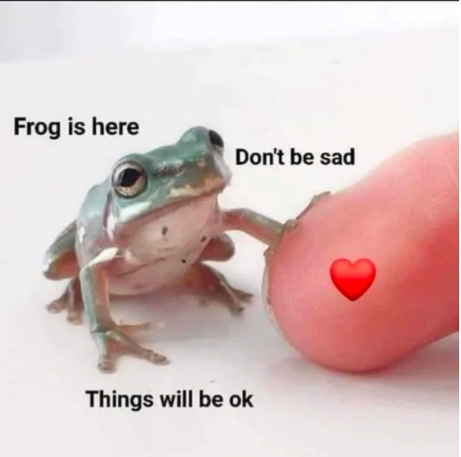
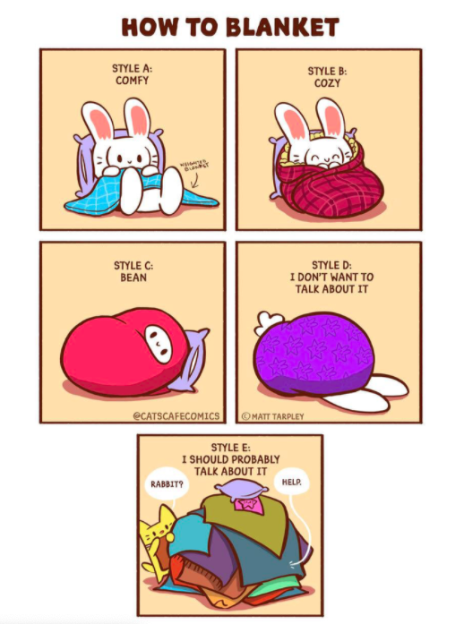

While individuals of any age, ethnicity, or gender can be at risk for depression and suicide, studies show that Alaskan Native and Native Americans have a higher risk.
It is important to note that help must be provided to these individuals as well to understand why they might be facing these issues.
 Interrelated factors including mental health disorders, intergenerational trauma, substance abuse, community issues may increase the risk of suicide and depression among Native Americans and Alaskan Natives.
Be sure to regularly check in on your loved ones, even if they do not show signs of depression or suicidal thoughts. Let them know they can open up to you.
However, if they do show signs, be very direct with them and refer them to professionals or the suicide hotline.